About me
I am currently a Postdoc researcher in Interactive Geometry Lab, ETH Zurich, advised by Prof. Olga Sorkine-Hornung. I obtained my Ph.D degree in 2021 from VCC, KAUST, supervised by Prof. Peter Wonka and Prof. Maks Ovsjanikov. Before that, I obtained the MSc. degree from Oxford University, UK, and the BSc. degree from Zhejiang University, China. My research is mainly related to shape analysis and geometry processing. I am also interested in computer graphics and computer vision in general.
You can find my full CV here.
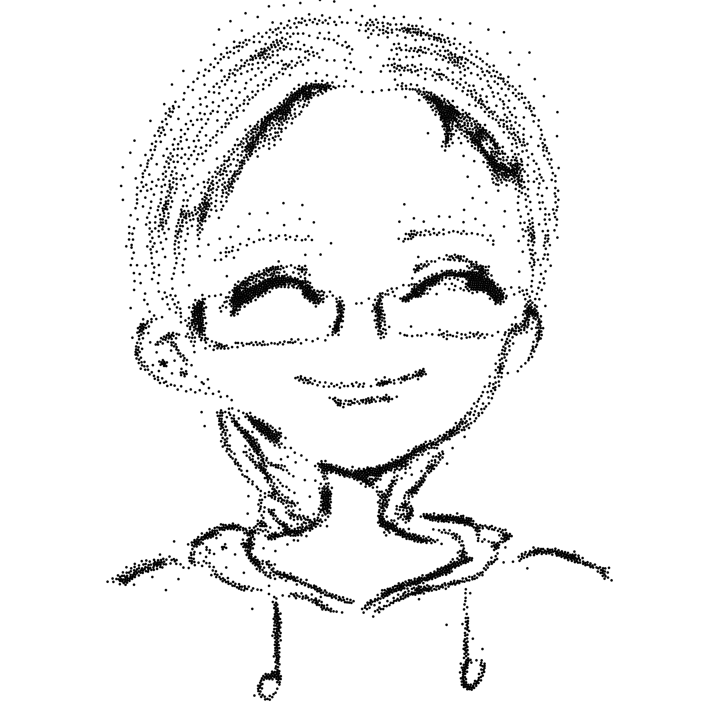
Publications
2024
Ningfeng Zhou, Jing Ren, Olga Sorkine-Hornung
Eurographics 2024
project page paper video code slides
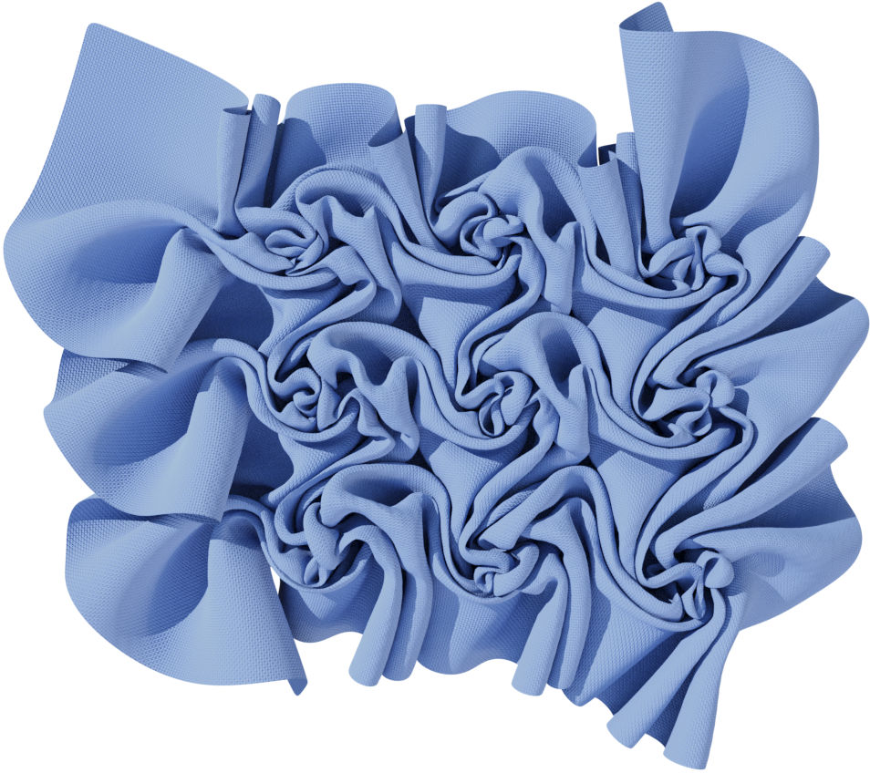 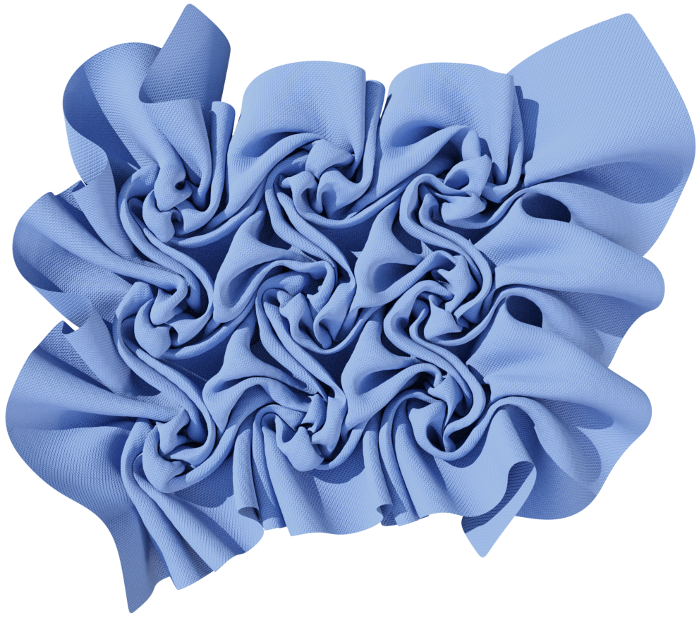
2023
Jing Ren, Aviv Segall, Olga Sorkine-Hornung
ACM Transactions on Graphics (presented at SIGGRAPH Asia 2023)
project page paper video code slides poster suppl. mat.
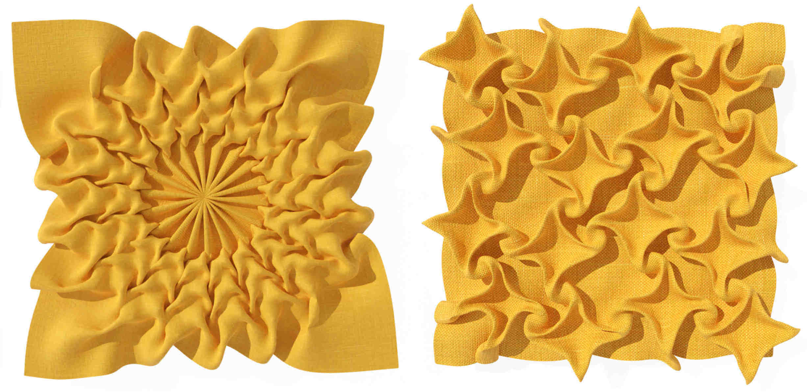
2022
Smooth Non-Rigid Shape Matching via
Effective Dirichlet Energy Optimization
Robin
Magnet, Jing Ren, Olga Sorkine-Hornung, Maks Ovsjanikov
International Conference on 3D Vision (3DV), 2022
Best Paper Award
paper
code
dataset
presentation
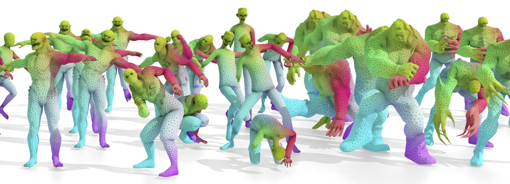
Learning to Construct 3D Building
Wireframes from 3D Line Clouds
Yicheng
Luo, Jing Ren, Xuefei
Zhe, Di
Kang, Yajing Xu, Peter Wonka, Linchao Bao
British
Machine Vision Conference (BMVC), 2022
paper
suppl.
code & dataset
poster
presentation
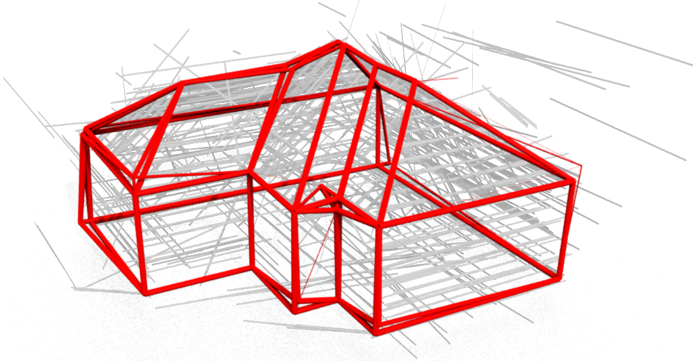
Gaussian Blue Noise
Abdalla G. M. Ahmed, Jing
Ren, Peter Wonka
ACM
Transactions on Graphics (Proc. SIGGRAPH Asia), 2022
project
page
paper
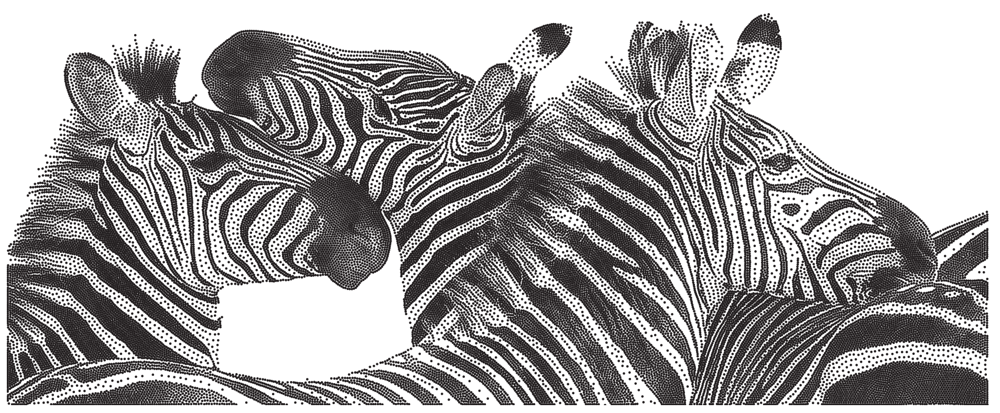
REALY: Rethinking the Evaluation of 3D
Face Reconstruction
Zenghao Chai*, Haoxian Zhang*, J.
Ren, Di
Kang, Zhengzhuo Xu, Xuefei
Zhe, Chun
Yuan, Linchao Bao
European Conference on Computer Vision (ECCV), 2022
project
page
paper
code (* equal contribution)
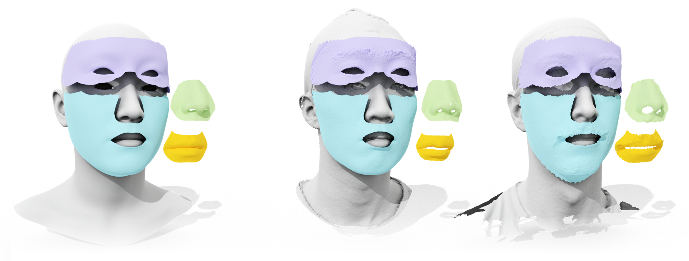
2021
Intuitive and Efficient Roof Modeling
for Reconstruction and Synthesis
Jing Ren, Biao
Zhang, Bojian Wu, Jianqiang
Huang, Lubin Fan, Maks Ovsjanikov, Peter Wonka
ACM Transactions
on Graphics (Proc. SIGGRAPH Asia), 2021
paper
code
suppl.
slides
presentation
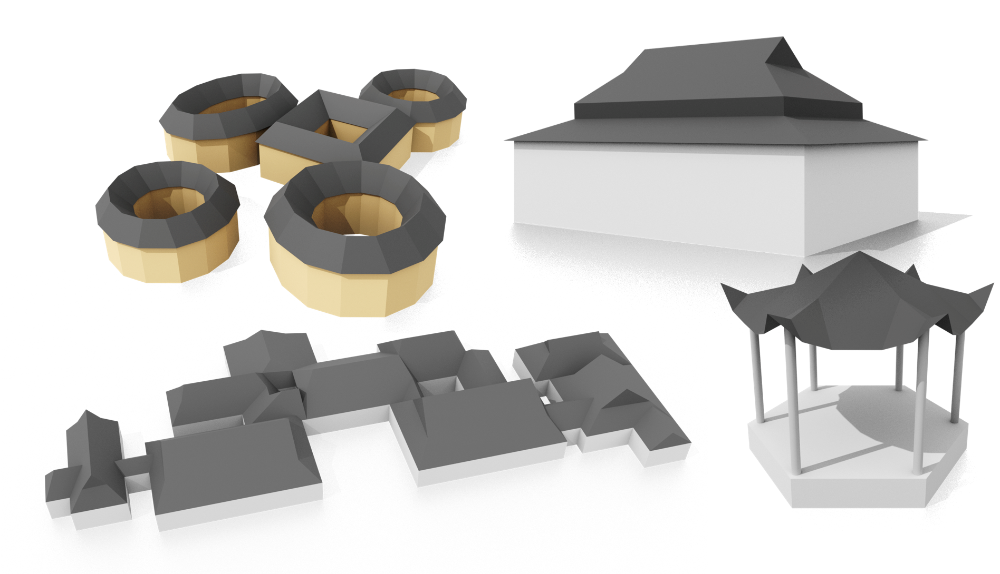
Shape Matching and Map Space Exploration
via Functional Maps
Jing Ren
PhD
Thesis, 2021
abstract
thesis

Discrete Optimization for Shape
Matching
Jing Ren, Simone Melzi, Peter Wonka, Maks Ovsjanikov
Computer Graphics Forum (Proc. SGP), 2021
paper
suppl.
code
slides
presentation
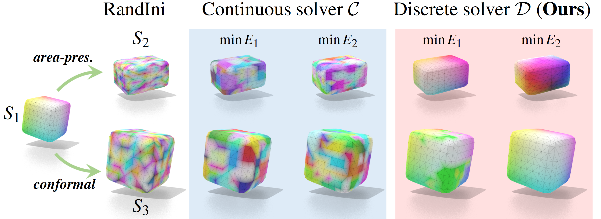
Fast Sinkhorn Filters: Using Matrix
Scaling for Non-Rigid Shape Correspondence with Functional
Maps
Gautam Pai,
Jing Ren, Simone Melzi, Peter Wonka, Maks Ovsjanikov
Proc. IEEE Conference on Computer Vision and Pattern Recognition
(CVPR), 2021
paper
suppl.
code
poster
presentation
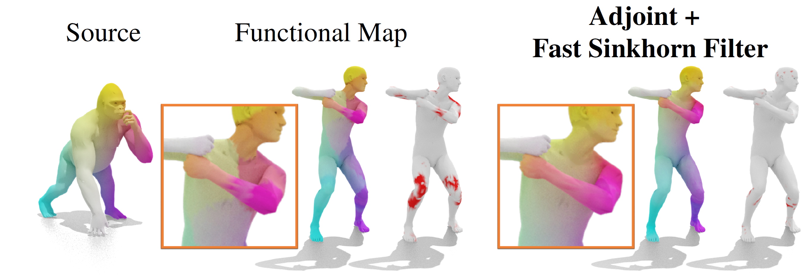
2020
Geometric analysis of shape variability
of lower jaws of prehistoric humans
Jing Ren,
Peter Wonka, Gowtham
Harihara, Maks
Ovsjanikov
L’Anthropologie, 2020
paper (official)
paper (preprint)
code
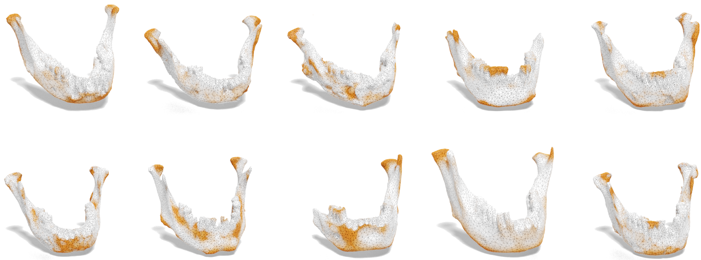
MapTree: Recovering Multiple Solutions
in the Space of Maps
Jing Ren, Simone Melzi, Maks Ovsjanikov, Peter Wonka
ACM Transactions
on Graphics (Proc. SIGGRAPH Asia), 2020
paper
code
slides
presentation
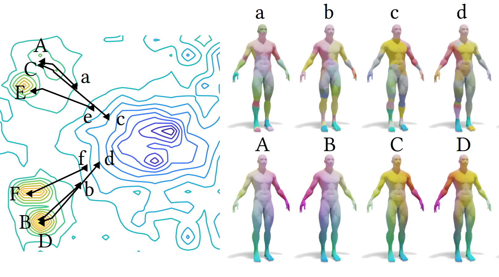
MGCN: Descriptor Learning using
Multiscale GCNs
Yiqun Wang,
Jing Ren, Dongming Yan, Jianwei Guo, Xiaopeng
Zhang, Peter Wonka
ACM
Transactions on Graphics (Proc. SIGGRAPH), 2020
paper
code
slides
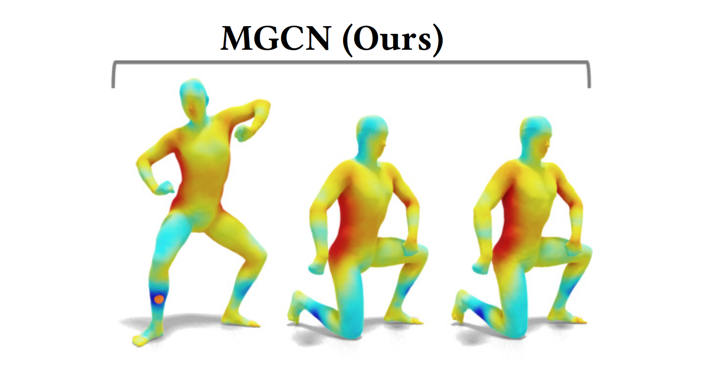
Consistent ZoomOut: Efficient Spectral
Map Synchronization
Ruqi Huang, Jing
Ren, Peter Wonka, Maks Ovsjanikov
Computer Graphics Forum (Proc. SGP), 2020
paper
code
presentation
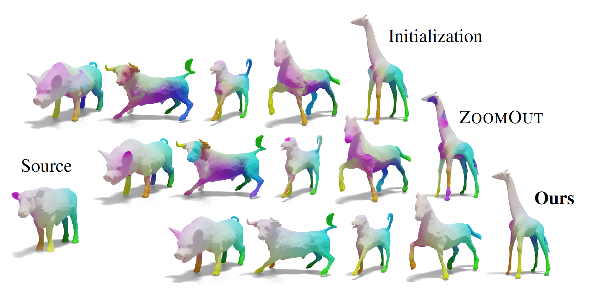
2019
ZoomOut: Spectral Upsampling for
Efficient Shape Correspondence
Simone Melzi*,
Jing Ren*, Emanuele Rodolà, Abhishek Sharma, Peter Wonka, Maks Ovsjanikov
ACM Transactions on Graphics (Proc. SIGGRAPH Asia), 2019
paper
code
slides (* equal contribution)

Structured Regularization of Functional
Map Computations
Jing Ren, Mikhail Panine, Peter Wonka, Maks Ovsjanikov
Computer Graphics Forum (Proc. SGP), 2019
paper
code
slides
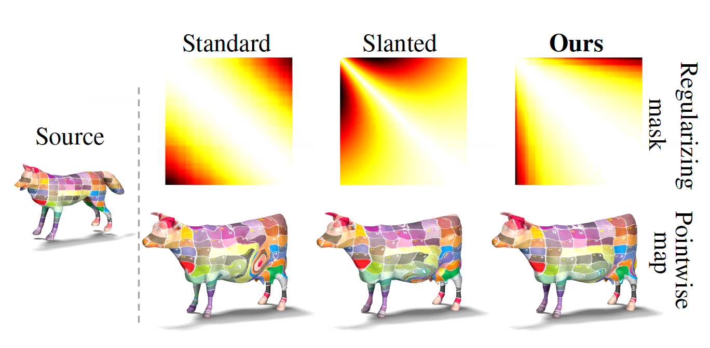
2018
Continuous and Orientation-preserving
Correspondence via Functional Maps
Jing Ren,
Adrien
Poulenard, Peter Wonka, Maks Ovsjanikov
ACM Transactions on Graphics (Proc. SIGGRAPH Asia), 2018
paper
code
slides
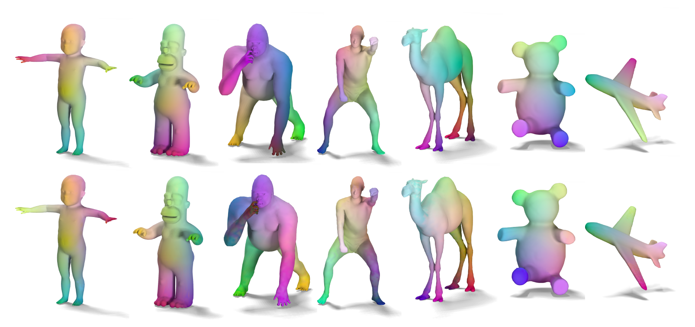
2017
Joint Graph Layouts for Visualizing
Collections of Segmented Meshes
Jing Ren, Jens
Schneider, Maks
Ovsjanikov, Peter Wonka
IEEE Transactions on Visualization and Computer Graphics (TVCG),
2017
paper
code
slides
video

Education
 Ph.D. in Computer Science
Ph.D. in Computer Science
KAUST,
Visual Computing Center
2015 - 2021
 M.Sc. in Financial Mathematics
M.Sc. in Financial Mathematics
Oxford
University
2014 - 2015
 B.Sc. in Math and Applied Math
B.Sc. in Math and Applied Math
Zhejiang University
2010
- 2014
Research Experience
 Tencent
Tencent
AI Lab
Jul 2021 - Dec 2021
 Alibaba
Alibaba
DAMO Academy
Jul 2020 - Jun 2021
 Ecole Polytechnique
Ecole Polytechnique
LIX
Jun - Aug 2017, 2018, 2019